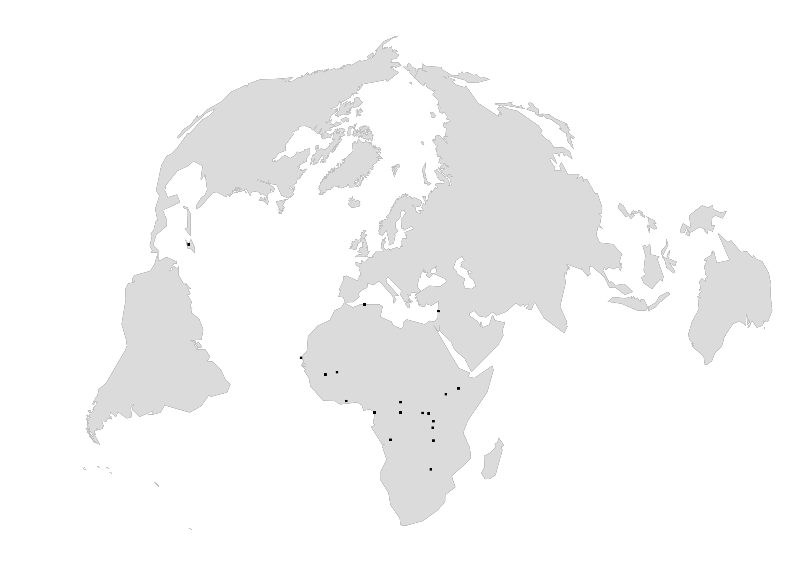

CV english - june 2021
CV français - juin 2021
🇫🇷
Humanitaire
Initialement en charge de projet humanitaire et notamment en Eau Hygiène et Assainissement, je commence à travailler avec Solidarités International en RD Congo sur les réseaux d’adduction d’eau potable des villes de Béni (Nord Kivu) et Kalémie (Tanganika) et notamment, au-delà des aspects techniques, sur les enjeux de pouvoir et d’appropriation des installations par les populations avec une question de fond : comment respecter son mandat tout en travaillant dans des zones urbaines oubliées des investissements étatiques ?
Je travaille par la suite comme référent technique ou spécialiste en EHA avec ACF, MSF, la Croix rouge française ou encore Première urgence internationale, au niveau des coordinations ou en tant que consultant ou encore en facilitant les ouvertures de programme/ ouverture de bases tout en conservant un regard critique sur le positionnement des interventions humanitaires et notamment sur les enjeux des interventions en milieu urbain.
Deuxième temps avec une prise de recul au Groupe URD puis INSO dans une logique d’accompagnement des acteurs déployant leurs activités sur le terrain et aidant à l’agilité des structurations de l’aide, notamment au format consortium. Je suis référent régional (Mali, Burkina Faso, Niger) pour la gestion de l'information d'INSO
Troisième et actuel temps de travail en me mettant aux services des organisations humanitaires en tant que consultant indépendant basé au Mali et proposant un appui et des compétences en cartographie et gestion de l’information.

Géographe
En parallèle de mes premières expériences, le constat est difficile mais il me manque à l’évidence des éléments de compréhension des enjeux sociaux pour déployer correctement les interventions dont j’ai la charge, notamment vis-à-vis des contextes urbains, mille feuilles politiques, économiques, sociaux. Je reprends alors mes études avec un Master 2 en Géographie du développement à Aix en Provence associé au laboratoire LPED .
Cartographe & infographe
Partie intégrante de mon cursus depuis mes premières années d'études, d’abord sur Mapinfo puis QGIS, la cartographie devient rapidement une passion et toujours une idée entêtante, comment représenter spatialement des enjeux qui, sans cela, resteraient difficile à lire, à analyser. QGIS est central dans mon kit de cartographie et j’y ajoute différents outils et langages informatiques, excel, R, javascript, Inkscape, Gimp, la suite Adobe, Visio, etc.
Différents auteurs m’inspirent et les réseaux sociaux jouent ici un rôle important pour m’inspirer adapter de nouvelles techniques à des besoins pratiques et autre.
Gestion de l'information
Arrivé sur le tard à cette notion de gestion de l’information de manière générale qui est en fait une composante clé du cycle de gestion de projet, c’est avec une certaine évidence que j’en fais un pilier de mon travail et me propose maintenant de conseiller les autres dans l’optimisation de leur processus et outils. La force de mon profil est alors de maitriser des outils techniques de représentations spatiales et autre tout en ayant une très bonne compréhension des besoins dans la bonne marche d'un projet, des contraintes à prendre en considération, des limites méthodologiques, etc.
Au Sahel
Arrivé en famille à Bamako en 2018, j’y découvre à la fois le Mali et y redécouvre le Sahel dans une situation que je n’avais alors pas pu mesurer lors deux séjours au Niger et au Burkina Faso dans les années 2000.
Responsable régional de la gestion de l’information pour INSO sur les missions Mali, Burkina Faso et Niger, j’y vois alors l’évidence d’une réflexion régionale basée sur une approche multiscalaire et intégrée, notamment basée sur une réflexion géographique.
|